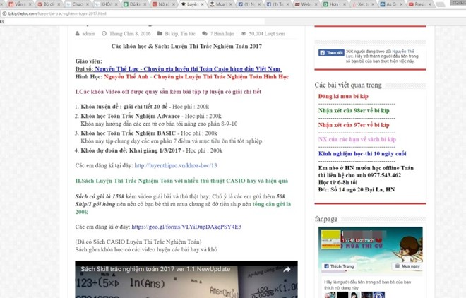
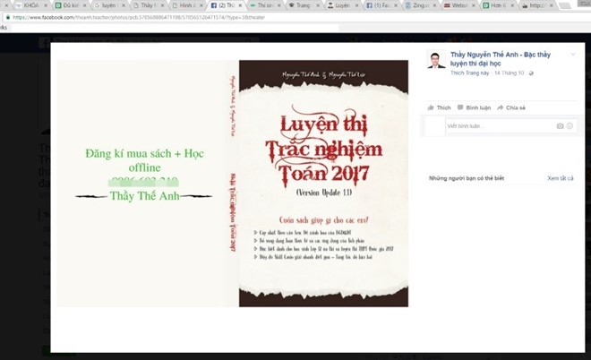

<section class="section-wrap" style="margin-top: 60px;">
	<div class="thongtin-wrap" style="position: relative;">
					<div class="quangcao" style="width: 275px; height: 800px; position: absolute; top: 20px; left: 0px;">
						
						
					</div>
	<div class="container infomation-content">
		<div class="infomation-content-us">
			<h1 class="the-article-title cms-title">Học sinh đổ xô luyện thi trắc nghiệm môn Toán</h1>
			<p class="the-article-summary cms-desc">
				Vì lo lắng hình thức thi mới của môn Toán, nhiều học sinh tìm đến các lớp luyện kỹ năng giải đề thi trắc nghiệm. Các trung tâm luyện thi trắc nghiệm nhờ vậy cũng nở rộ.
				</p>
				<div class="the-article-body cms-body">
					<p>Quý Hằng, một học sinh lớp 12 kể, kể từ sau khi Bộ GD&amp;ĐT công bố phương án thi THPT quốc gia 2017 trong đó, môn Toán thi theo hình thức trắc nghiệm, các thầy cô ở trường đều thay đổi phương pháp dạy.</p>
					<p>"Trước đây khi đề thi bao hàm cả kiến thức lớp 10 và 11 thì bọn em học song song kiến thức 12 ở trên lớp và ôn tập lại lớp 10,11 vào học thêm buổi chiều. Bây giờ các thầy cô chỉ tập trung giảng kĩ kiến thức lớp 12. Bám sát vào đề thi minh hoạ, bám sát vào đề thi minh họa", Hằng cho hay.</p>
					<h4><strong>Thay đổi cả cách dạy và học</strong></h4>

					<p>Theo Hằng, các bài kiểm tra trên lớp của các em cũng được các thầy cô thiết kế theo hình thức kết hợp trắc nghiệm và tự luận. Hằng giải thích do các thầy cô ở trường không thể soạn đủ số lượng câu hỏi để có nhiều mã đề đủ cho học sinh nên buộc phải dùng hình thức kết hợp này để đảm bảo tính khách quan.</p>
					<p>Tuy nhiên, các thầy cô chủ yếu vẫn giảng kiến thức như trước chứ không giảng về các kỹ thuật làm bài thi trắc nghiệm. "Em nghĩ dù là trắc nghiệm thì vẫn cần nền tảng kiến thức của sách giáo khoa vững thì mới làm tốt được".</p>
					<table class="picture" align="center">
					<tbody>
					<tr>
					<td ></td>
					</tr>
					<tr>
					<td class="pCaption caption">Các khóa luyện thi trắc nghiệm môn toán với nhiều hình thức xuất hiện tràn lan trên mạng. <em>Ảnh chụp màn hình</em>.
					<p>&nbsp;</p>
					</td>
					</tr>
					</tbody>
					</table>
					<p>Dẫu vậy, ngoài một buổi chiều học thêm toán ở trường, em còn đi học thêm ở một lớp học thêm ngoài. Và ở lớp này, thầy giáo chủ yếu hướng dẫn các em luyện các đề thi theo hình thức thi trắc nghiệm.</p>
					<p>N.T.H, Trường THPT Nguyễn Văn Cừ (Gia Lâm, Hà Nội) cho biết hình thức thi trắc nghiệm môn toán cũng làm thay đổi cách dạy và học của thầy cô và các em tại trường.</p>
					<p>"Trước đây thi tự luận thì chúng em chú ý nhiều hơn tới việc trình bày chi tiết còn hiện nay thi trắc nghiệm thì bọn em chỉ tập trung vào các kỹ năng tính toán nhanh", H cho hay. </p>
					<p>H cho biết hiện nay mới đầu năm học nên các thầy cô vẫn đang tập trung dạy kiến thức là chính, trong phần luyện tập thì các thầy cô mới giảng thêm về kỹ năng làm bài trắc nghiệm.</p>
					<p>Mặc dù vậy, H cũng cho biết em và các bạn vẫn đến các lớp học thêm của thầy cô ở trường, nhiều bạn cũng lựa chọn đến học tại các trung tâm để học thêm môn toán. </p>
					<p>Theo H, hiện tại, mới vào đầu năm nên tại các lớp học thêm các em vẫn học song song cả kiến thức lẫn luyện đề thi trắc nghiệm. "Có thể tới học kỳ 2 hoặc gần cuối năm các thầy cô mới tập trung vào phần luyện thi trắc nghiệm" - H nói</p>
					<p>Theo ông Đào Tuấn Đạt, Hiệu trưởng trường THPT Anhxtanh (Hà Nội), sau khi Bộ GD&amp;ĐT chốt phương án thi trắc nghiệm môn toán, việc dạy và học môn toán tại trường cũng thay đổi để thích nghi với hình thức thi mới.</p>
					<p>Ông Đạt cho biết do hình thức thi trắc nghiệm kiến thức sẽ phủ rộng hơn nên việc giảng dạy của giáo viên trên lớp cũng phải đảm bảo phủ hết các kiến thức trong chương trình chứ không chú trọng trọng tâm nào đó như trước. Bên cạnh đó, trong việc biên soạn các bài giảng, bài tập, nếu như trước đây là những bài toán nhiều câu hỏi thì nay các thầy sẽ biên soạn theo hướng các bài toán chỉ có 1 câu hỏi.</p>
					<p>Ngoài ra, do đề thi năm nay tập trung vào chương trình lớp 12 nên giáo viên cũng hướng tập trung vào giảng dạy kỹ cho học sinh kiến thức lớp 12 để chuẩn bị cho kỳ thi.</p>
					<p>Theo ông Đạt, nếu cách dạy trước đây chú trọng tới cách trình bày của học sinh thì hiện nay, các thầy sẽ tập trung nhiều hơn vào phần kết quả. Tuy vậy, việc dạy học trên lớp vẫn không có nhiều thay đổi do học sinh vẫn phải nắm chắc kiến thức mới có thể giải quyết được bài toán.</p>
					<p>Ông Đạt cũng cho biết hiện tại trường Anxtanh các giáo viên toán soạn câu hỏi kiểm tra và bài tập theo hướng trắc nghiệm - điền đáp án chứ không phải là chọn đáp án có sẵn. </p>
					<p>Theo ông Đạt, việc ra bài tập theo hướng này mới có thể đánh giá được học sinh có thực sự giải được bài toán hay không chứ nếu chọn đáp án thì rất khó đánh giá.</p>
					<h4><strong>Nở rộ 'bí kíp' thi trắc nghiệm</strong></h4>
					<p>Khi phụ huynh và học sinh lo lắng với một hình thức thi mới thì cũng là lúc các hình thức luyện thi trắc nghiệm môn Toán cũng bắt đầu nở rộ.</p>
					<p>Nếu trước cách đây vài tháng, khi cuộc tranh luận có thi trắc nghiệm toán hay không đang ở cao trào, người ta rất khó khăn khi đi tìm tài liệu hướng dẫn thi trắc nghiệm môn toán, thì nay, chưa đầy 1 tháng sau khi Bộ GD&amp;ĐT công bố phương án thi, chỉ cần gõ từ khóa "luyện thi trắc nghiệm môn toán" sẽ cho ra hàng trăm ngàn kết quả.</p>
					<p>Các trang web cung cấp các đề thi trắc nghiệm mẫu, các bí kíp luyện thi trắc nghiệm môn toán xuất hiện rầm rộ trên Internet. Các dịch vụ luyện thi trắc nghiệm môn toán với nhiều hình thức cũng đua nhau quảng cáo, tiếp thị để tiếp cận các khách hàng.</p>
					<table class="picture" align="center">
					<tbody>
					<tr>
					<td></td>
					</tr>
					<tr>
					<td class="pCaption caption">Cuốn sách luyện thi trắc nghiệm toán với các kỹ thuật giải đề thi bằng máy tính casio được quảng cáo trên mạng với giá 150 ngàn đồng. <em>Ảnh chụp màn hình.</em>
					<p>&nbsp;</p>
					</td>
					</tr>
					</tbody>
					</table>
					<p>Trên website&nbsp;<em>http://m…vn</em>, quảng cáo về một khóa luyện thi trắc nghiệm môn toán giá 600 ngàn đồng với lời khẳng định cung cấp cho học sinh hệ thống hơn 10.000 câu hỏi trắc nghiệm được cập nhật liên tục để học sinh có thể ôn luyện chinh phục kỳ thi THPT quốc gia 2017.</p>
					<p>Tương tự, website có tên&nbsp;<em>http://bikip…vn</em>&nbsp;còn cung cấp hẳn 4 hình thức luyện thi trắc nghiệm toán khác nhau từ các video off được quay sẵn, sách luyện thi trắc nghiệm toán, video live stream cho tới các lớp học trực tiếp tại nhà các "thầy" với chi phí từ 100.000 - 200.000 đồng.</p>
					<p>Theo tìm hiểu của phóng viên, chủ của website - Nguyễn Thế Anh và Nguyễn Thế Lục, đồng thời cũng là các thầy giáo trực tiếp hướng dẫn đều là những người còn rất trẻ.&nbsp;</p>
					<p>Theo thông tin đăng ký trên các tài khoản Facebook được giới thiệu trên website này, Nguyễn Thế Anh khoảng 26 tuổi, từng là sinh viên ĐH Ngoại thương còn Nguyễn Thế Lục năm nay mới 21, là sinh viên ĐH Bách khoa Hà Nội.</p>
					<p>Tuy nhiên, cả Thế Anh và Thế Lục đã biên soạn hẳn một cuốn sách hướng dẫn luyện thi trắc nghiệm toán có tên "Luyện thi trắc nghiệm toán 2017" rồi tự in thành sách và bán trên Facebook cá nhân cũng như các website do hai người tự lập ra là&nbsp;<em>bikip…vn</em>&nbsp;và&nbsp;<em>luyenthi….vn</em>&nbsp;với giá khoảng 150 ngàn đồng.</p>
					<p>Mặc dù tự tổ chức các lớp luyện thi trên mạng cũng như tại nhà rồi tự soạn sách luyện thi trắc nghiệm toán để bán, nhờ việc liên tục chia sẻ các đề thi trắc nghiệm mẫu trên mạng, các lớp học của Thế Anh và Thế Lục có rất đông học sinh theo học. Facebook cá nhân của 2 người này cũng có hàng chục ngàn người theo dõi (follow).</p>
					<p>Ông Đào Tiến Đạt cho rằng học sinh không nên tin vào những tài liệu luyện thi trắc nghiệm toán được cung cấp trên các trang mạng cũng như các trung tâm luyện thi trắc nghiệm môn Toán với những lời hứa hẹn sẽ cung cấp các kỹ thuật giải đề thi trắc nghiệm.</p>
					<p>"Thực tế chỉ có một vài câu là có thể sử dụng mẹo được, còn lại hầu hết học sinh đều phải nắm kiến thức mới có thể giải được các câu hỏi trong đề thi" - ông Đạt khẳng định. Ông Đạt cũng cho biết học sinh tại trường ông không đi luyện kỹ năng thi trắc nghiệm ở ngoài.</p>
					<p>Ngoài ra, theo ông Đạt, hiện nay, nhiều người tự xưng là thầy giáo tổ chức các lớp luyện thi cả trên mạng và tại nhà song hoàn toàn không ai biết họ có phải là thầy giáo hay không và có được cấp phép để tổ chức luyện thi hay không.</p>
					<p>Mặc dù vậy, ông Đạt cho rằng học sinh có thể sử dụng các đề thi trắc nghiệm trên mạng để luyện tập các kỹ năng làm bài khi có thời gian, song không nên dùng để tính kết quả xem mình có thể đạt bao nhiêu điểm vì đề thi trên mạng sẽ không bao giờ sát với đề thi thật.</p>


					</div>
		</div>
	</div>
	</div>
</section>